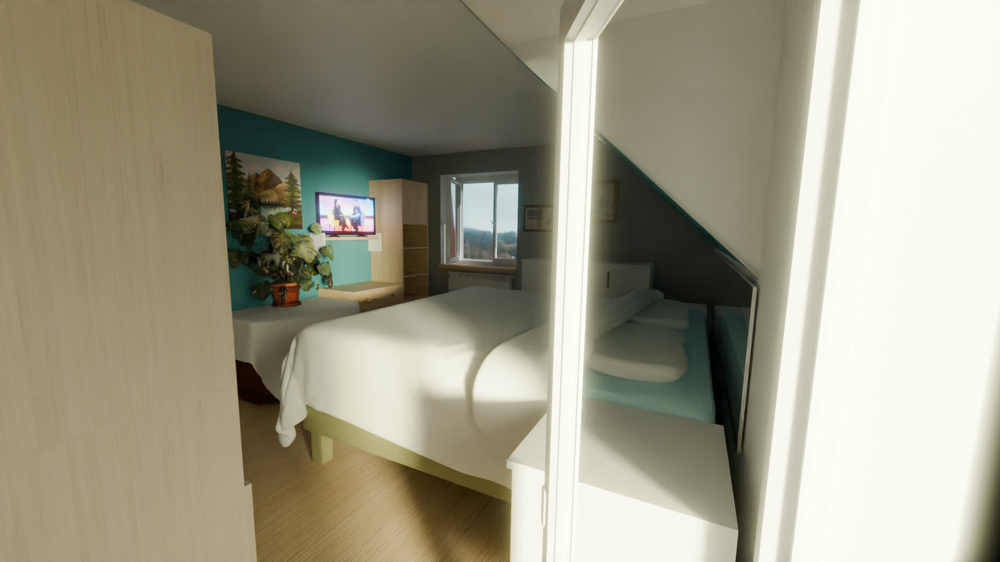
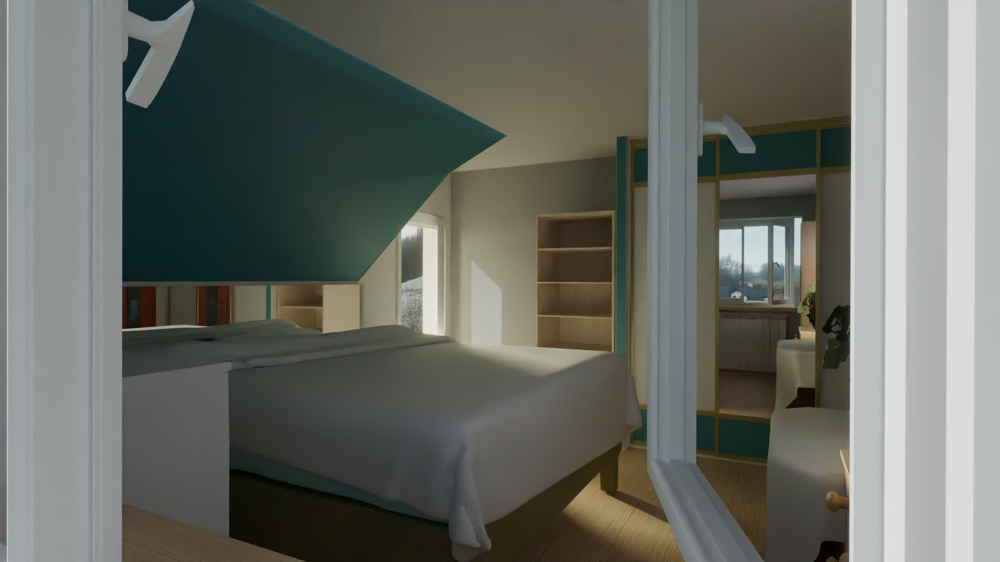
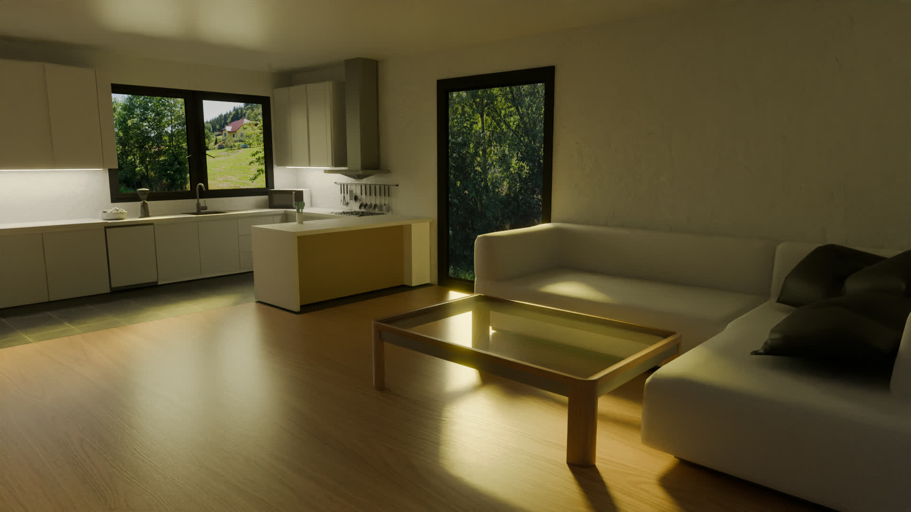
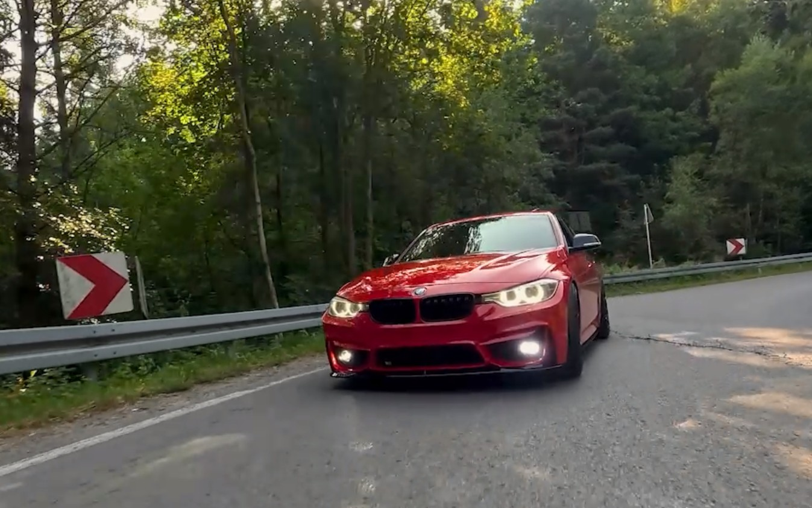
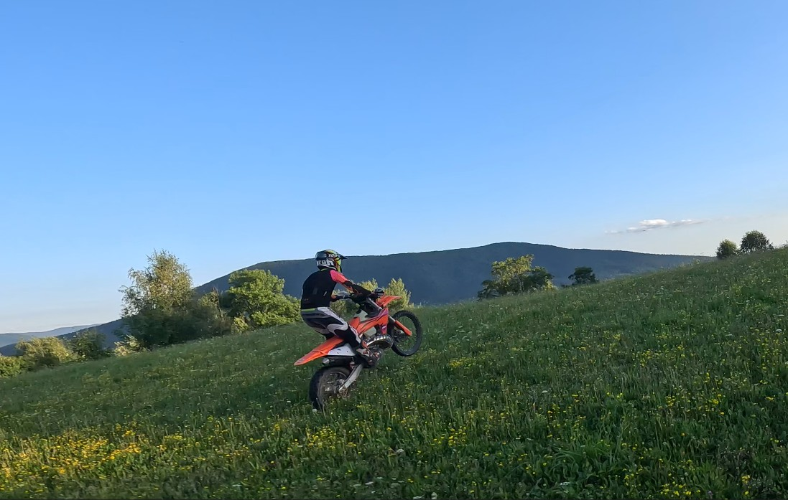
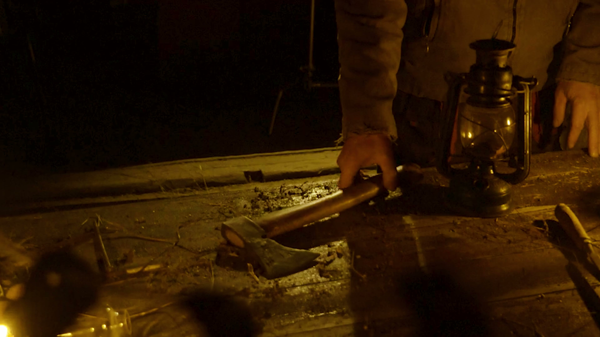

Projekty Artystyczne
Wykonane z starannością, estetyką i sercem.
Prace wykonane dla Solar Plane AGH
Grafiki i wizualizacje
Do wykonywania grafik wykorzystuje programy pozwalające uzyskać najwyższą jakość zarówno rastrowo jak i wektorowo. Zależy mi na tym aby moje prace były estetyczne, precyzyjne i po prostu przyjemne do oglądania. W trakcie ich wykonywania zawsze testuję kilka wersji aby wybrać tą najlepszą i gdy to możliwe dopracowywuje nawet najmniejsze szczegóły.
Stworzone wizualizacje wnętrz

Projekt sypialni

Projekt sypialni

Projekt salonu oraz kuchni
Wizualizacje przyszłego wyglądu pomieszczeń
Wykonuję realistyczne odzwzorowania wnętrz tych przyszłych jak i istniejących.Możliwość odzworowania przyszłego wyglądu pomieszczeń jeszcze przed ich powstaniem lub przeprowadzeniem zmian pozwala oszczędzić czas i pieniądze. Zobaczenie tego jak będzie wyglądać twój przyszły dom/mieszkanie gdy będzie wykończony daje wiele motywacji do działania.
Modele 3D do gier i dla gotowych produktów
Assety do gier, rendery prawdziwych produktów
Każdy z tych modeli wymagał wykorzystania technik modelowania pozwalających uzyskać "lekką" siatkę wektorową w celu optymalizacji przy wykorzystaniu ich w grach lub innych animacjach. Tekstury przygotowane w sposób pozwalający oddać prawdziwy wygląd elementu jednocześnie nie obciążając zbędnie ze względu na nieoptymalną geometrię.
Nagrywanie i montaż

Ogrywki samochodów

Nagrywanie FPV

Format filmowy
Samochody, sport, filmy fabularne
Proces rozpoczyna się od pomysłu i przygotowań do nagrywek. W trakcie nagrywania staram się jak najlepiej oddać klimat i charakter sceny w zależności od typu projektu, w scenach dynamicznych wykorzystuje ujęcia FPV, z ręki i nie tylko, przy wolniejszych używam sliderów czy statywów. Podczas montażu dbam o to aby każdy element był spójny z resztą, sam koniec to postprodukcja, etap który pozwala zrobić ostatnie szlify i dopracować nawet najmniejsze detale.